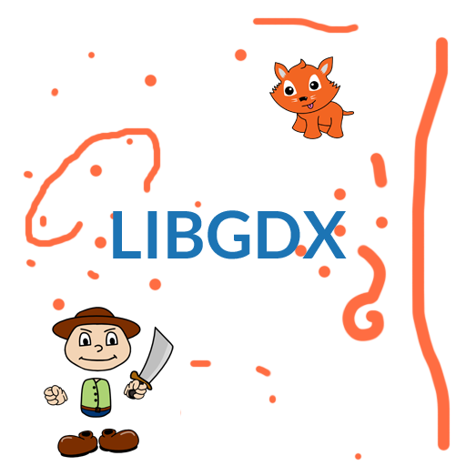

No WebGL?
#version 300 es #define PI 3.141592 precision highp float; // replacement for gl_FragColor out vec4 fragColor; in highp vec2 texcoord; uniform uint time; uniform uvec2 viewportSize; uniform vec4 userParam; uniform sampler2D userTexture; uniform sampler2D lightTexture; float d(vec2 uv) { return sqrt(pow(0.5 - uv.x, 2.0) + pow(0.5 - uv.y, 2.0)); } void main() { float a = PI * (texcoord.x - 0.5); vec2 v = vec2(cos(a), sin(a)) * (texcoord.y / 2.0); vec2 pc = mix( texcoord, // {0.5, 0.5} = center vec2(0.5, 0.5) + v, // lerp amount vec2((userParam.w + 1.0) / 2.0) ); float r = float(viewportSize.y) / float(viewportSize.x); fragColor = texture( lightTexture, texcoord * (vec2(1.0) / vec2(textureSize(lightTexture, 0))) // / vec2(textureSize(lightTexture, 0)) ); //fragColor = (texture( userTexture, pc ) * (1.0 - texture(lightTexture, texcoord / vec2(textureSize(lightTexture, 0))).a)) + texture(lightTexture, texcoord / vec2(textureSize(lightTexture, 0))); }

Compile
X
Y
Z
W
Use absolute viewport
Status:
Compiled